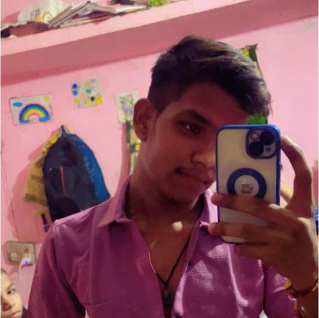

I'm 🍁RAVI🍁
* Main ek dedicated Web Developer hoon jo technology ke madhyam se complex problems ko solve karne mein vishwas rakhta hoon. Meri journey programming ki duniya mein tab shuru hui jab maine pehli baar coding ke zariye kisi idea ko reality mein badalte dekha. Aaj, ek educated professional ke roop mein, main modern web technologies jaise HTML, CSS, JavaScript, aur Java Full Stack development mein maharat rakhta hoon.
Mera shaikshik (educational) background mere liye ek majboot buniyaad raha hai. Maine hamesha apni studies ko practical application ke saath jodne ki koshish ki hai. Mere liye education sirf degree lena nahi, balki har din kuch naya seekhna aur purane concepts ko behtar banana hai. Isi mindset ke saath maine 1 saal se zyada ka hands-on experience hasil kiya hai, jisme maine scalable web applications aur user-friendly interfaces banane par kaam kiya.
Ek Web Developer ke taur par, mera main focus clean code likhne aur ek aisa user experience dene par hota hai jo simple aur effective ho. Mujhe nayi technologies aur frameworks ke saath experiment karna pasand hai, kyunki tech ki duniya har pal badal rahi hai. Main ek fast-paced learner hoon jo hamesha "Great Work Ethic" ko follow karta hoon.
Jab main code nahi kar raha hota, tab main industry ke naye trends ko follow karta hoon aur ye dekhta hoon ki kaise design aur functionality ko ek saath laya jaye. Main ab apne career ke us padav par hoon jahan main ek challenging environment mein kaam karke apni skills ko aur bhi nikharna chahta hoon aur professional world mein apna yogdaan dena chahta hoon."
"Meri education meri professional journey ki sabse mazboot buniyaad rahi hai. Maine hamesha ye mana hai ki ek accha developer banne ke liye sirf coding aana kafi nahi hai, balki computer science ke core concepts ki gehri samajh hona zaroori hai. Maine apni schooling aur college ke dauran hamesha logic building, algorithms, aur problem-solving par focus kiya hai, jo aaj mujhe complex coding tasks ko asani se samajhne mein madad karte hain.
Maine apni degree ek reputed institution se poori ki hai, jahan maine software development ke basics se lekar advanced topics tak sab kuch seekha. Meri academic education ne mujhe disciplined rehna, deadlines par kaam karna, aur team ke saath milkar projects handle karna sikhaya. College ke saalon mein maine sirf kitabi gyan (theoretical knowledge) hi nahi li, balki kai mini-projects aur workshops mein hissa lekar unhe practical taur par apply bhi kiya.
Ek educated developer hone ka sabse bada fayda ye hai ki main sirf 'code copy' nahi karta, balki uske piche ki science ko samajhta hoon. Meri education ne mujhe ye sikhaya hai ki technology har roz badal rahi hai, isliye 'Learn how to learn' (kaise seekhte hain) wali skill sabse upar hai. Maine apne academics ke saath-saath Java Full Stack, React, aur modern web standards mein certification bhi kiya hai taaki main industry ke standard se kadam mila saku.
Mera shaikshik background mujhe ek logical approach deta hai, chahe wo database design karna ho ya frontend ka responsive layout banana. Main apne aap ko ek 'Continuous Learner' manta hoon. Mere liye education kabhi khatam nahi hoti; har naya project aur har nayi problem mere liye ek nayi class ki tarah hoti hai jahan main kuch naya seekhta hoon."